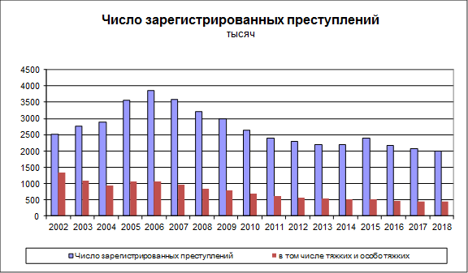

МИНИСТЕРСТВО ВНУТРЕННИХ ДЕЛ ВОЛГОГРАДА
СЛУЖИМ ВОЛГОГРАДУ, СЛУЖИМ ЗАКОНУ!
Краткая характеристика состояния преступности в Российской Федерации за январь - август 2020 года
Анализ статистических сведений о состоянии преступности в Российской Федерации за 8 месяцев 2020 года свидетельствует о сохранении тенденции сокращения числа криминальных деяний по ряду составов, характеризующихся высокой степенью общественной опасности. В частности, отмечается снижение количества преступлений против личности на 6,6 %, в том числе умышленных причинений тяжкого вреда здоровью – на 4,9 %. Количество зарегистрированных разбоев уменьшилось на 19 %, грабежей – на 13,8 %, краж – на 2,6 %, в том числе квартирных – на 21,3 %.
Преступлений, совершенных с использованием оружия, по сравнению с январем-августом 2019 года стало меньше на 7,6 %.
В условиях поэтапного снятия ограничительных мер, ранее введенных в связи с распространением коронавирусной инфекции, криминогенная ситуация в городах, селах и иных населенных пунктах сохраняет стабильность. В общественных местах зарегистрировано на 10,6 % преступлений меньше, чем год назад. На 10,4 % сократилось число противоправных деяний, совершенных на улицах, площадях, в парках и скверах.
Более безопасной стала оперативная обстановка на объектах транспорта, где количество зарегистрированных преступлений снизилось на 11,4 %, в том числе по тяжким и особо тяжких составам – на 10,6 %.
